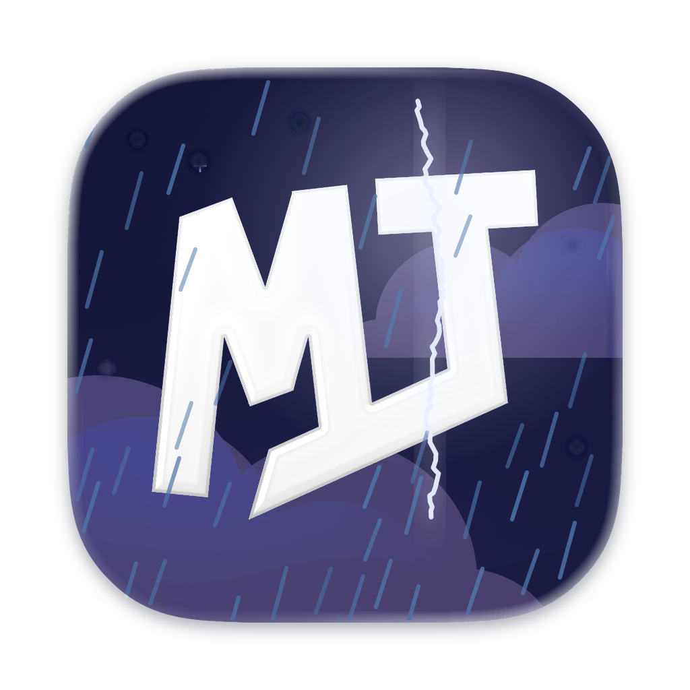
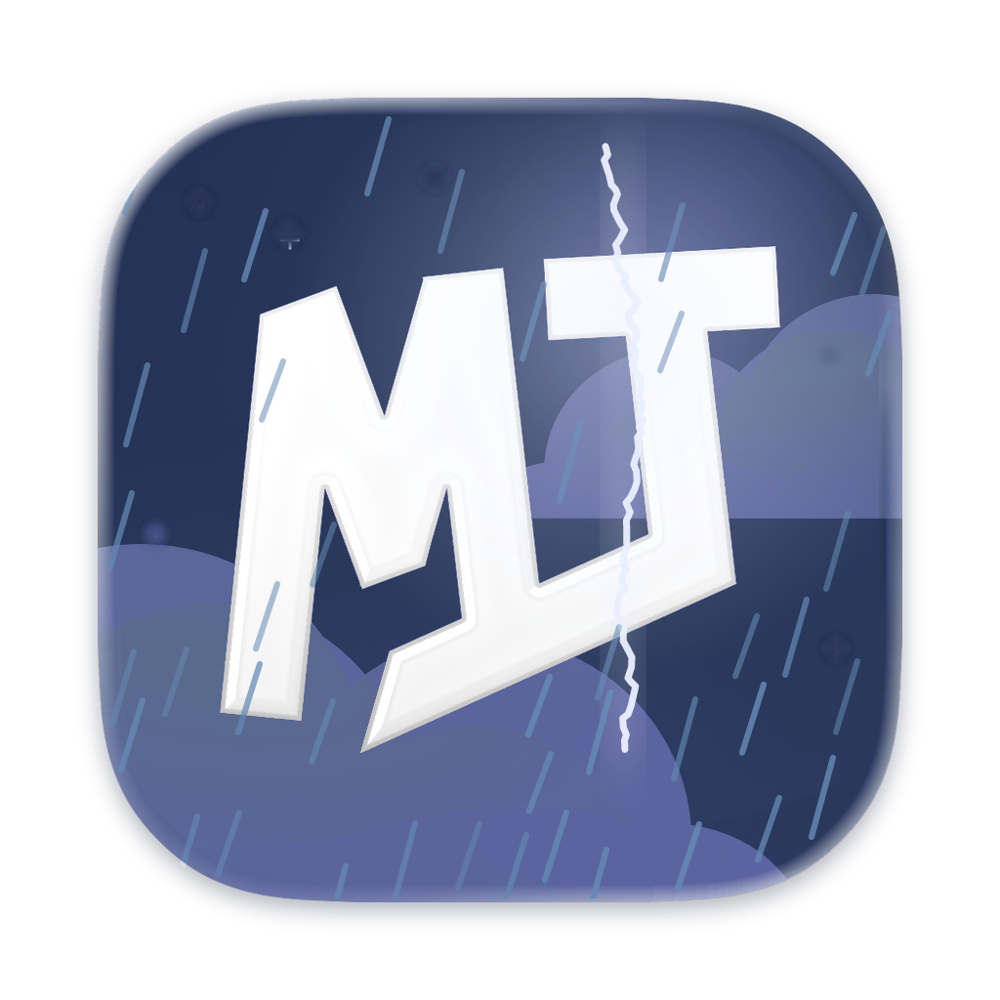
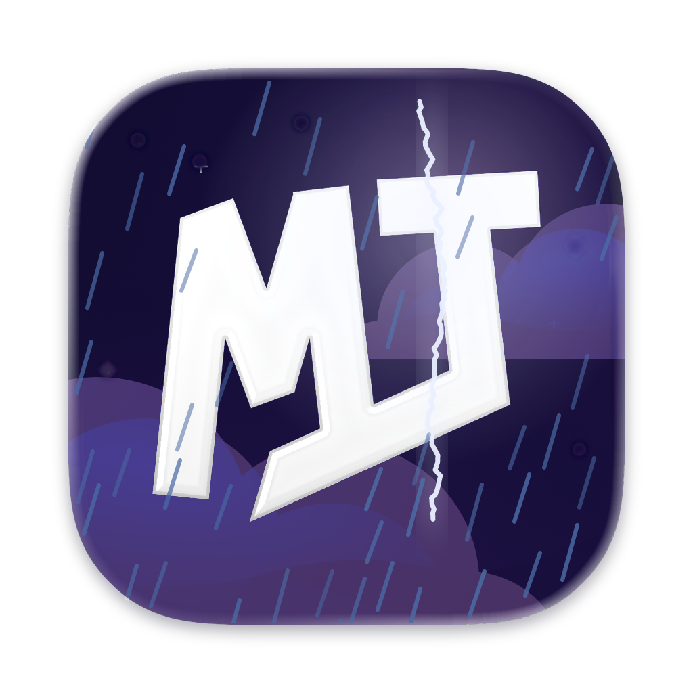

MT Code · 24 weather app icons
Each tile is the shipped MT icon repainted in that sky's palette. Below every icon is the matching sidebar artwork.
Dawn · ClearDawn · CloudyDawn · RainDawn · SnowDawn · Fog
Dawn · StormDay · ClearDay · CloudyDay · RainDay · SnowDay · Fog
Day · StormDusk · ClearDusk · CloudyDusk · RainDusk · SnowDusk · Fog
Dusk · StormNight · ClearNight · CloudyNight · RainNight · SnowNight · FogNight · Storm